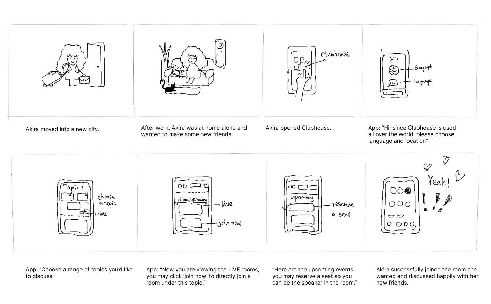

Clubhouse UX redesign
Overview
Clubhouse is is a social network app based on voice, where people can create and join "rooms" and chat with others. Clubhouse is a good place to meet new friends with shared interests.
Despite its initial success, the popularity of Clubhouse did not last long (according to Sensor Tower, the app's downloads decreased by 90% within a few months in 2021). Users have also been expressing their dissatisfaction online, as they can no longer find ideal content on the app. This case study aims to analyze the reasons behind this problem and suggest potential solutions.
Research
I did some research through online platforms, app reviews, comments, blogs, articles and also talked to people I know. From the research, I summarized the main issues that people were bringing up.
Main problems:
"I wish there was a way to filter out clubs I'm not interested in."
"... hard to find a room with right topic where I might join and talk."
"... have to listen to the talk at least 5 minutes to see if there's any value."
"Low voice quality due to the speaker's bad wifi and microfon."
...
This case study will focus on the first two problems, which can be restated as a single question: How can users easily find rooms with the valuable information they prefer?
Analysis
To solve this problem, I first looked deeper into users' needs through personas and with the understanding of users' mindset, then I went through the existing Clubhouse interface and identified the blockages along the existing user flow.
Personas
Personas should represent the main user groups of the app. But who are the user groups in this case? Under which situations do people need to use this app and talk online? I summarized three main situations where users have the need of having conversations on an app.
As there are already strong competitors such as facebook, what's app who provide same functions(online voice conversation) and already have a network based on family and friends, then why bother downloading another app?
Therefore, in this case study, this group is NOT considered as the target group for the app.😕
Clubhouse is based on houses, which are dedicated to different interests, hobbies and topics. It is a better choice to position Clubhouse as "a place where you can meet people with shared interests from all over the world".
This group will be a main target group for Clubhouse. 😃
✔
When I was doing the research, I noticed a large portion of users do not have a specific idea of what topic they want to discuss. They simply want to find somebody who are available to talk.
This group will be a main target group for Clubhouse. 😃
✔
Two personas are created based on the two user groups:
Alex 46
Occupation: Software engineer
Goals: Stay up-to-date with the latest tech trends, connect with other tech enthusiasts and professionals, find a community of like-minded individuals.
(More interest focused)
Akira 23
Occupation: Recent college graduate
Goals: Akira wants to expand her social circle in the new city and connect with others who share her interests in anime. She is also open to explore other new interests.
(More casual, vast topics)
Existing user flow
Although users may still get to know new people through the contacts, but the problem is, they can only incrementally expand their social circle. However, if the app's mechanism is not based on contacts, but all people of the same shared interests are available to you, you have much greater chance to find the right room and the right people you want!
I summarized the problems and a potential solution as follows:
Clubhouse must make it clear:
(The mechanism of these two ways below are completely different.)
Is Clubhouse positioned as an app based on close friends and family (Clubhouse’s current mechanism),
Current problem:
If users want to discuss a specific topic, within the limited contact-based circle, users may probably not find anyone happens to be online and also wants to talk about the same topic. And users will get a lot of random rooms on the homepage.
This leads to users’ feedback in the research:
"... impossible to scroll through all of the recommendations to find topic I have interest."
Furthermore, social media like Facebook and what’s app also have this voice-based function, they are actually more convenient choices for users to connect with friends and family. (It is also discussed in the user group section above.)
or
Is it positioned as an app for people to meet strangers with shared interests all over the globe? And meet the people you probably would never come across in you daily life?
Solution:
Change the mechanism from contact-based to category-based.
Which means, all ongoing rooms under a specific topic category could be seen on the recommended page, no matter whether the speakers have relationship with users’ contacts or not.
In this way, users can always find someone online to talk.
Ideate & design
Using the storyboard and the wireframe below, I explored a new user flow according to the idea and solution mentioned above in the analysis section, which is making the rooms from contact-based to category-based.
Storyboard
Wireframe